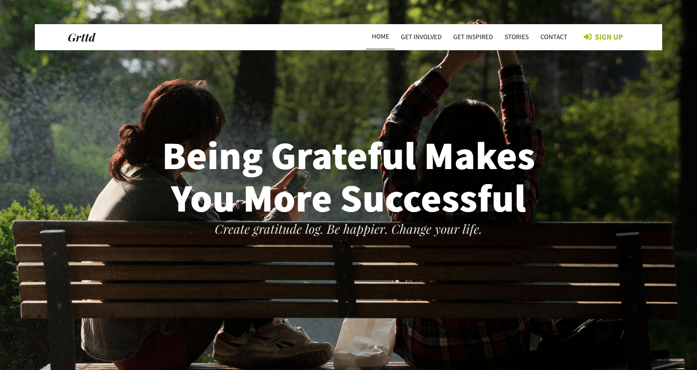

April 2018
In this tutorial I am going to run through the process of creating a Gratitude Log landing page as designed by Tomas Laurinavicius..
To build this page, we will use :
Bulma is an open source CSS framework based on Flexbox and created by Jeremy Thomas. I wanted to learn a new framework, discover a new tool and I have no doubt it will improve my CSS skills. Bulma is an alternative to Bootstrap, Jeremy explain how here.
First, let’s install Bulma. There are several ways to use Bulma. Here, I decided to install the Bulma’s package with npm :
npmbulma ~/Web mkdir Grttd
~/Web cd Grttd
~/Web/Grttd npm init
~/Web/Grttd npm install bulma
npm notice created a lockfile as package-lock.json. You should commit this file.
+ bulma@0.7.0
added 1 package from 1 contributor in 2.019s
~/Web/Grttd ls
node_modules package-lock.json package.json
npm install normalize.css
Normalize.css is a small CSS file that provides better cross-browser consistency in the default styling of HTML elements. It’s a modern, HTML5-ready, alternative to the traditional CSS reset.
So far, here are the files and the folder structure :
Create the folders needed and already add the images.
Open up index.html and enter the following base HTML:
<!DOCTYPE html>
<html>
<head>
<meta charset="utf-8">
<meta name="viewport" content="width=device-width, initial-scale=1">
<title>Gratitude Log</title>
<link rel="stylesheet" href="node_modules/normalize.css/normalize.css">
<link rel="stylesheet" href="node_modules/bulma/css/bulma.min.css">
<script defer src="https://use.fontawesome.com/releases/v5.0.7/js/all.js"></script>
</head>
<body>
<section class="section">
<div class="container">
<h1 class="title">
Gratitude Log
</h1>
<p class="subtitle">
My first website with <strong>Bulma</strong>!
</p>
</div>
</section>
</body>
</html>
We have our first bit of code! Let’s break it down.
This code is based on starter template from Bulma. Really clean and short. The
section contains the necessary viewport tag so our media queries work correctly. I’ve linked the css files from the nodes folders and add a script to be able to use the icons from Font Awesome.The
element contains is almost empty for the moment. I will follow the process of Thomas for the rest of the page.We want something approaching this :
I think that a good start is to use the hero class from Bulma. With that in place, you just have to erase the useless html and make some CSS adjustment.
<section class="hero is-success is-fullheight">
<div class="hero-head">
<header class="navbar">
<div class="container">
<div class="navbar-brand">
<a class="navbar-item">
<span class="grttd">Grttd</span>
</a>
<span class="navbar-burger burger" data-target="navbarMenuHeroC">
<span></span>
<span></span>
<span></span>
</span>
</div>
<div id="navbarMenuHeroC" class="navbar-menu">
<div class="navbar-end">
<a class="navbar-item is-active">Home</a>
<a class="navbar-item">Get Involved</a>
<a class="navbar-item">Get Inspired</a>
<a class="navbar-item">Stories</a>
<a class="navbar-item">Contact</a>
<span class="navbar-item">
<a class="button is-success is-inverted">
<span class="icon">
<i class="fas fa-sign-in-alt"></i>
</span>
<span>Sign up</span>
</a>
</span>
</div>
</div>
</div>
</header>
</div>
<div class="hero-body">
<div class="container has-text-centered">
<h1 class="title">
Being Grateful Makes<br>You More Successful
</h1>
<h2 class="subtitle">
Create gratitude log. Be happier. Change your life.
</h2>
</div>
</div>
</section>
:root{
--dark-grey : #0E0E0E;
--green : #96c218;
}
/*! Generated by Font Squirrel (https://www.fontsquirrel.com) on April 18, 2018 */
@font-face {
font-family: 'playfair_displaybold_italic';
src: url('../fonts/playfairdisplay-bolditalic-webfont.woff2') format('woff2'),
url('../fonts/playfairdisplay-bolditalic-webfont.woff') format('woff');
font-weight: normal;
font-style: normal;}
@font-face {
font-family: 'source_sans_proregular';
src: url('../fonts/sourcesanspro-regular-webfont.woff2') format('woff2'),
url('../fonts/sourcesanspro-regular-webfont.woff') format('woff');
font-weight: normal;
font-style: normal;}
@font-face {
font-family: 'playfair_displayitalic';
src: url('../fonts/playfairdisplay-italic-webfont.woff2') format('woff2'),
url('../fonts/playfairdisplay-italic-webfont.woff') format('woff');
font-weight: normal;
font-style: normal;}
@font-face {
font-family: 'source_sans_probold';
src: url('../fonts/sourcesanspro-bold-webfont.woff2') format('woff2'),
url('../fonts/sourcesanspro-bold-webfont.woff') format('woff');
font-weight: normal;
font-style: normal;}
@font-face {
font-family: 'pt_serifbold_italic';
src: url('../fonts/ptf76f-webfont.woff2') format('woff2'),
url('../fonts/ptf76f-webfont.woff') format('woff');
font-weight: normal;
font-style: normal;}
@font-face {
font-family: 'source_sans_prosemibold';
src: url('../fonts/sourcesanspro-semibold-webfont.woff2') format('woff2'),
url('../fonts/sourcesanspro-semibold-webfont.woff') format('woff');
font-weight: normal;
font-style: normal;}
@font-face {
font-family: 'playfair_displayblack';
src: url('../fonts/playfairdisplay-black-webfont.woff2') format('woff2'),
url('../fonts/playfairdisplay-black-webfont.woff') format('woff');
font-weight: normal;
font-style: normal;}
@font-face {
font-family: 'pt_serifregular';
src: url('../fonts/ptf55f-webfont.woff2') format('woff2'),
url('../fonts/ptf55f-webfont.woff') format('woff');
font-weight: normal;
font-style: normal;}
.hero.is-success{
background-color: transparent;
border: none;
position: relative;}
.hero-head{
position: absolute;
top: 50px;
width: 90%;
background-color: #fff;
align-self: center;}
.hero.is-success a:not(.button):not(.dropdown-item):not(.tag),
.navbar-burger{
color: var(--dark-grey);}
.navbar-item{
font-family: 'source_sans_proregular', sans-serif;
font-size: 0.875em;
text-transform: uppercase;}
.hero.is-success a.navbar-item.is-active,
.hero.is-success a.navbar-item:hover{
background-color: transparent;
border-bottom: 1px solid var(--dark-grey);}
span.grttd{
font-family: 'playfair_displaybold_italic', serif;
font-size: 1.625em;
text-transform: none;}
.button.is-success.is-inverted{
color: var(--green);}
.button{
border-radius: 0;
font-family: 'source_sans_probold', serif;}
/* Add the picture and made it take all the place */
.hero-body{
background:url(../img/summerTime.jpg) no-repeat center center;
background-size: cover;}
h1.title{
font-family: 'source_sans_probold', serif;
font-size: 5em;
line-height: 1.1em;}
h2.subtitle{
font-family: 'playfair_displayitalic', serif;
font-size: 1.625em;
line-height: 1.1em;
}
This code allows us to arrive to this : 
Now, let’s focus on the example of a gratitude log and on the button.
<div class="card">
<div class="card-content">
<div class="media">
<div class="media-left">
<figure class="image is-64x64">
<img src="img/128-5.jpg" alt="Placeholder image" class="face">
</figure>
<span class="streak">12</span>
</div>
<div class="media-content">
<p class="title is-4">John Smith</p>
<p class="subtitle is-6">12 grateful days streak</p>
</div>
</div>
</div>
</div>
<a class="button is-info is-inverted is-large">
<span>Start Living</span>
<span class="icon"><i class="fas fa-arrow-right"></i></span>
</a>
</div>
.button.is-info.is-inverted{
color: var(--dark-grey);
text-transform: uppercase;
font-family: 'source_sans_prosemibold',serif;
font-size: 1em;
letter-spacing: 0.2em;
padding: 1em 2em;}
.button.is-info.is-inverted:hover{
background-color: var(--green);
color: var(--white)}
/* Gratitude Log Example*/
.card{
background-color: transparent;
box-shadow: 0 0 transparent;}
.media-left{
position: relative;}
img{
border-radius: 50%;}
.streak{
font-family: 'source_sans_probold', sans-serif;
background-color: var(--green);
border-radius: 50%;
padding: 0.25em;
color: var(--white);
position: absolute;
font-size: 0.85em;
left: 45px;
top: -5px;
line-height: normal;}
.media{
justify-content: center;}
.media-content{
flex-grow: 0;}
.media-content > .title{
font-family: 'pt_serifregular', serif;}
.media-content > .subtitle{
font-family: 'source_sans_proregular', serif;
}
Here is the result :

Relatively easy and fast part. First, without the 3 examples :
<section class="section">
<div class="container content has-text-centered">
<h1 class="title">Daily Gratitude Log</h1>
<h2 class="subtitle corp">Do you know what distinguishes successful people from unsuccessful ones ? Actually many things. but practice gratitude is one thing everty successful individuals is doing everyday. John F. Kennedy, Oprah Winfrey, Ralph Waldo Emerson, Seneca, Dale Carnegie,... Ready to join them ?</h2>
<a class="button is-info is-not-inverted green">
<span>Start Living</span>
<span class="icon">
<i class="fas fa-arrow-right"></i>
</span>
</a>
</div>
</section>
<hr>
<section class="section">
<div class="container content has-text-centered">
<h1 class="title">Get Inspired</h1>
<h2 class="subtitle corp">Get inspired from amazing community of positive people. Discover what people are grateful for and start appreciate things you have been taking for granted. Growth mindset is what distinguished losers and winners.</h2>
</div>
</section>
<hr>
<section class="section">
<div class="container content has-text-centered">
<h1 class="title">Create Gratitude Log</h1>
<input class="button email" type="text" placeholder="Enter your email">
<a class="button is-info is-not-inverted">
<span>Start Living</span>
<span class="icon"><i class="fas fa-arrow-right"></i></span>
</a>
</div>
</section>
Really few modifications
.content h1.title{
font-family: 'playfair_displayblack', serif;
font-size: 3.125em;
letter-spacing: 0.1em;
line-height: 1.1em;}
.content h2.subtitle{
font-family: 'pt_serifregular', serif;
font-size: 1.125em;
line-height: 1.1em;
font-weight: 300;
width: 60%;
margin: auto auto 2em;
padding-top: 2em;}
.button.is-info.is-not-inverted{
color: var(--dark-grey);
text-transform: uppercase;
font-family: 'source_sans_prosemibold',serif;
font-size: 1em;
letter-spacing: 0.2em;
padding: 1em 2em;
background-color: var(--green);
color: var(--white);}
.button.is-info.is-not-inverted:hover{
background-color: var(--white);
color: var(--green);}
I used the Card Component of Bulma.
<section class="section">
<div class="container">
<div class="columns">
<div class="column">
<div class="card">
<div class="card-content">
<div class="media">
<div class="media-left">
<figure class="image is-64x64">
<img src="/img/128-2.jpg" alt="Placeholder image" class="face">
</figure>
<span class="streak">55</span>
</div>
<div class="media-content">
<p class="title is-4">John Smith</p>
<p class="subtitle is-6">55 grateful days streak</p>
</div>
</div>
<div class="content">
I’m very grateful for the chance to travel the world and meet so many incredible people that literally changed my life. Enjoying every signle day and having no regrets.
</div>
</div>
</div>
</div>
[...]
</div>
</div>
</section>
.card-content > .content{
font-family: 'pt_serifregular', serif;
font-style: italic;
font-weight: 300;}
<footer class="footer">
<div class="container">
<div class="columns">
<div class="column is-one-third">
<p class="bd-footer-link-title">
<a class="navbar-item">Grttd</a></p>
</div>
<div class="column">
<p class="bd-footer-link-title">About</p>
<p class="bd-footer-link"><a href="#">Story</a></p>
<p class="bd-footer-link"><a href="#">Team</a></p>
<p class="bd-footer-link"><a href="#">Community</a></p>
</div>
<div class="column">
<p class="bd-footer-link-title">Legal</p>
<p class="bd-footer-link"><a href="#">Privacy Policy</a></p>
<p class="bd-footer-link"><a href="#">Terms of services</a></p>
</div>
<div class="column">
<p class="bd-footer-link-title">Connect</p>
<p class="bd-footer-link"><a href="#">Twitter</a></p>
<p class="bd-footer-link"><a href="#">Instagram</a></p>
<p class="bd-footer-link"><a href="#">Fcebook</a></p>
</div>
<div class="column">
<p class="bd-footer-link-title">Address</p>
<p class="bd-footer-link">Gratitude Log Ltd.</p>
<p class="bd-footer-link">Station Street</p>
<p class="bd-footer-link">London City</p>
<p class="bd-footer-link">United Kingdom</p>
</div>
</div>
</div>
</footer>
.footer{
background-color: #2d2d2d;
padding-bottom: 4em;
margin-top: 3em;}
.footer a:hover{
background-color: transparent;
color: var(--white);}
.bd-footer-link-title{
font-family: 'source_sans_proregular', sans-serif;
text-transform: uppercase;
color: var(--white);}
.bd-footer-link-title a{
font-family: 'playfair_displayblack_italic', serif;
font-size: 1.6em;
text-transform: none;
color: var(--white);
padding-left: 0 ;}
.bd-footer-link,
.bd-footer-link a{
font-family: 'source_sans_proregular', sans-serif;
color: var(--whiter);}
.bd-footer-link a:hover{
text-decoration: underline;}
Here is the final result on a desktop screen :

So, are we done ?
Let’s check the result on a smartphone :

Not really what we wanted…
It’s mainly due to the size of the text. So, a little bit of CSS :
@media (max-width: 576px) {
h1.title{
font-size: 1.75em;}
h2.subtitle{
font-size: 1.3em;}
.subtitle.is-6{
font-size: 0.9rem;}
.content h1.title{
font-size: 1.4em;}
.content h2.subtitle{
font-size: 1.1em;
width: 100%;}
}
You also noticed that, when I click on the burger menu, nothing happens… So, let’s fix it with a little bit of JS as mentionned on Bulma :
<script>
document.addEventListener('DOMContentLoaded', function () {
// Get all "navbar-burger" elements
var $navbarBurgers = Array.prototype.slice.call(document.querySelectorAll('.navbar-burger'), 0);
// Check if there are any navbar burgers
if ($navbarBurgers.length > 0) {
// Add a click event on each of them
$navbarBurgers.forEach(function ($el) {
$el.addEventListener('click', function () {
// Get the target from the "data-target" attribute
var target = $el.dataset.target;
var $target = document.getElementById(target);
// Toggle the class on both the "navbar-burger" and the "navbar-menu"
$el.classList.toggle('is-active');
$target.classList.toggle('is-active');
});
});
}
});
</script>
This way, I think that everything is fine :